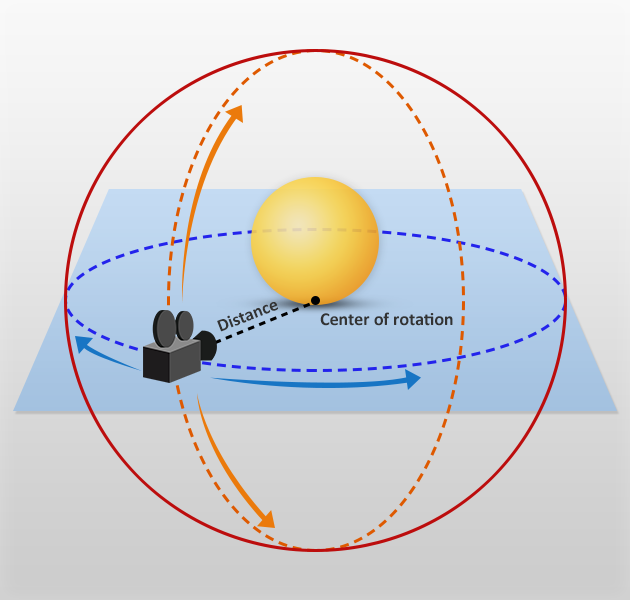

Navigate in the Scene Editor
Warning
Приносим свои извинения за неудобства. Для этой страницы нет перевода на русский язык. Она будет отображаться на английском языке.
Beginner Level designer
You can move around the scene and change the perspective of the editor camera. The XYZ axes in the bottom left show your orientation in 3D space.
Move around in the scene
There are several ways to move the editor camera around the Scene Editor.
Tip
Holding the Shift key speeds up movement.
Fly
Hold the right mouse button and move the mouse to change the camera direction. Hold the right mouse button and use the WASD keys to move. This is similar to the controls of many action games.
Pan
Hold the right mouse button and the center mouse button and move the mouse.
Dolly
To dolly (move the camera forward and backward), use the mouse wheel.
Orbit
Hold Alt and the left mouse button and move the mouse.
The point of rotation is always the center of the screen. To adjust the distance to the center, use the mouse wheel.

Focus on an entity
After you select an entity, press the F key. This zooms in on the entity and centers it in the camera editor.
You can also focus by clicking the magnifying glass icon next to the entity in the Entity Tree.

Tip
Focusing and then orbiting with Alt + left mouse button is useful for inspecting entities.
Controls
| Action | Control |
|---|---|
| Move | Arrow keys + right mouse button
|
| Look around | Hold right mouse button + move mouse |
| Dolly | Middle mouse button + right mouse button + move mouse |
| Orbit | Alt key + left mouse button |
| Zoom | Mouse wheel
|
| Pan | Middle mouse button + move mouse |
| Focus | F (with entity selected) |
Tip
You can change the scene navigator controls in Edit > Settings under Scene Editor > Key bindings.

Change camera editor perspective
You can change the camera editor perspective using the view camera gizmo in the top-right of the Scene Editor.
Snap camera to position
To change the angle of the editor camera, click the corresponding face, edge, or corner of the view camera gizmo.
| Click | Camera position |
|---|---|
| Face | Faces the selected face |
| Edge | Faces the two adjacent faces at a 45° angle |
| Corner | Faces the three adjacent faces at a 45° angle |
Camera options
Note
This page explains how to use the Scene Editor camera. For information about how to use cameras in your game, see Graphics — Cameras.
To display the Scene Editor camera options, click the camera icon in the top-right of the Scene Editor.
Perspective and orthographic views
Perspective view is a "real-world" perspective of the objects in your scene. In this view, objects close to the camera appear larger, and lines of identical lengths appear different due to foreshortening, as in reality.
In orthographic view, objects are always the same size, no matter how far their distance from the camera. Parallel lines never touch, and there's no vanishing point. It's easy to tell if objects are lined up exactly in orthographic view.
You can also switch between perspective and orthographic views by clicking the view camera gizmo as it faces you.
Field of view
You can change the camera field of view. This changes the camera frustum, and has the effect of zooming in and out of the scene. At high settings (90 and above), the field of view creates stretched "fish-eye lens" views. The default setting is 45.
Near and far planes
The near and far planes determine where the camera's view begins and ends.
The near plane is the closest point the camera can see. The default setting is 0.1. Objects before this point aren't drawn.
The far plane, also known as the draw distance, is the furthest point the camera can see. Objects beyond this point aren't drawn. The default setting is 1000.
Game Studio renders the area between the near and far planes.

Camera speed
The camera speed setting changes how quickly the camera moves in the editor.